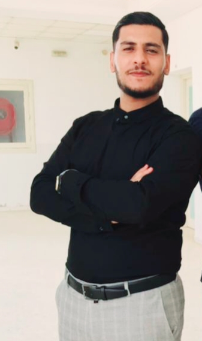

OUNISSI MOHAMED AYMEN
Jeune diplômé de l'Institut Supérieur d'Informatique et de Multimédia de Sfax, Tunisie. Je suis très motivé, dynamique, rigoureux, innovant et passionné par le développement des applications informatiques. Je suis doué pour le travail en équipe c'est pour cela j'ai une bonne compétence en communication et en gestion d'équipe.
Centres D'intérêt: Navigation sur Internet, Actualité informatique, High-tech, Voyages & découvertes,...
VOIR MON CV